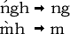

Based on data I provided, Joseph Chen was kind enough to create a Yale Romanization input module for his Chinese Input System. This input module makes it possible to enter Chinese characters into the Newton by writing their romanizations. However, he has never added it to the collection on his web page, and I haven't been able to get ahold of him, so I'm including it here. Joseph does have two earlier (non-Yale) cantonese input modules; skip them, they're not worth much.
Cantonese is a dialect of Chinese found in southern China, and particularly in Hong Kong, Macau, many parts of southeast asia, and chinatowns everywhere. Yale Romanization is a romanization of cantonese that is by far the most popular form of romanization for non-native cantonese learners (like me). Yale cantonese romanization spells out Chinese characters in one of four combinations:
The initials are p b t d k g ch j kw gw m n ng f l h s y w
The finals are a aai aau aam aap aan aat aang aak ai au am ap an at ang ak e eng ek ei eu eung euk eui eun eut i iu im ip in it ing ik o oi on ot ong ok ou u ui un ut ung uk yu yun yut
So for example, some spellings include: gwai, chaai, hyut, ngo, mou, ng, m, au, yu, kip, uk. But that's not all: Cantonese is a tonal language, so inflection is important. Cantonese Chinese has seven accents:
0. High
1. High Falling
2. High Rising
3. Middle
4. Low Falling
5. Low Rising
6. Low
In Yale romanization, these accents are indicated by placing certain accent marks over the first vowel in the final, possibly in combination with placing an "h" after the last vowel in the final. For example:
For the vowel-less cantonese romanizations "ng" and "m", the "h" is placed at the end of the word, and the accent is placed on top of the first letter (the n or the m).
In this input module, the High (0) and High Falling (1) accents are both treated as High Falling (1). That's common practice anyway nowadays as the High accent is slowly disappearing from the language, at least in Hong Kong. The package provides two modules: "Cantonese (Yale)" and "Cantonese (Yale Ortho)".
The "Cantonese (Yale)" module expects the user to enter the romanized spelling of the word without the inflection information (no accent, no following "h"), but include the accent as a number after the word. For example: ngo4 The number values are those given above (remember that high and high-falling are both 1).
The "Cantonese (Yale Ortho)" module expects the user to enter the full Yale romanization of the word, accents and all. For "ng" and "m", the accent and the optional h are ignored. Note that due to a bug, the Ortho module does not display any characters beginning with "ch".
From the UniHan database at Unicode.org.
Some links to get you started: